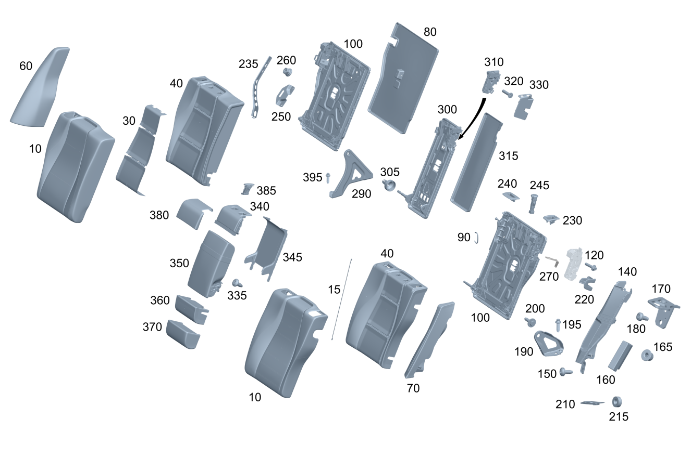

| № | Артикул | Название | Кол. | Примечание | Ограничение |
|---|---|---|---|---|---|
| 10 | A 167 920 49 15 | Обивка спинки сиденья (BEZUG FONDLEHNE) | 1 | Обивка спинки сиденья в задней части салона слева | (550A/850A)+-567 |
| 10 | A 167 920 60 16 | Обивка спинки сиденья (BEZUG FONDLEHNE) | 1 | Обивка спинки сиденья в задней части салона слева | (560A/960A)+-567 |
| 10 | A 167 920 64 16 | Обивка спинки сиденья (BEZUG FONDLEHNE) | 1 | Обивка спинки сиденья в задней части салона слева | 650A+(809/800/801/802/803+-053/453) |
| 10 | A 167 920 96 22 | Обивка спинки сиденья (BEZUG FONDLEHNE) | 1 | Обивка спинки сиденья в задней части салона слева | 120A+(802+052/803+-053) |
| 10 | A 167 920 96 22 | Обивка спинки сиденья (BEZUG FONDLEHNE) | 1 | Обивка спинки сиденья в задней части салона слева | 120A+-(809/800/801/802/803+-053) |
| 10 | A 167 920 65 02 | Обивка спинки сиденья (BEZUG FONDLEHNE) | 1 | Обивка спинки сиденья в задней части салона слева | 200A+-567 |
| 10 | A 167 920 35 11 | Обивка спинки сиденья (BEZUG FONDLEHNE) | 1 | Обивка спинки сиденья в задней части салона слева | 200A+215A |
| 10 | A 167 920 03 02 | Обивка спинки сиденья (BEZUG FONDLEHNE) | 1 | Обивка спинки сиденья в задней части салона слева | 600A+(809/800/801/802/803/804+-054)+-567 |
| 10 | A 167 920 93 24 | Обивка спинки сиденья | 1 | Обивка спинки сиденья в задней части салона слева | 600A+-(809/800/801/802/803/804+-054/567) |
| 10 | A 167 920 97 02 | Обивка спинки сиденья (BEZUG FONDLEHNE) | 1 | Обивка спинки сиденья в задней части салона слева | 800A+-567 |
| 10 | A 167 920 95 25 | Обивка спинки сиденья | 1 | Обивка спинки сиденья в задней части салона слева | 800A+(807/808/29X)+-567 |
| 10 | A 167 920 37 11 | Обивка спинки сиденья (BEZUG FONDLEHNE) | 1 | Обивка спинки сиденья в задней части салона слева | 800A+885A+-567 |
| 10 | A 167 920 03 27 | Обивка спинки сиденья | 1 | Обивка спинки сиденья в задней части салона слева | 800A+885A+(807/808/29X)+-567 |
| 10 | A 167 920 07 02 | Обивка спинки сиденья (BEZUG FONDLEHNE) | 1 | Обивка спинки сиденья в задней части салона слева | (500A/940A)+-567 |
| 10 | A 167 920 35 25 | Обивка спинки сиденья | 1 | Обивка спинки сиденья в задней части салона слева | (570A/870A)+(807/808/29X)+-567 |
| 10 | A 167 920 40 25 | Обивка спинки сиденья | 1 | Обивка спинки сиденья в задней части салона слева | 580A+(807/808/29X)+-567 |
| 10 | A 167 920 40 25 | Обивка спинки сиденья | 1 | Обивка спинки сиденья в задней части салона слева | 980A+(807/808/29X) |
| 10 | A 167 920 50 15 | Обивка спинки сиденья (BEZUG FONDLEHNE) | 1 | Обивка спинки сиденья в задней части салона справа | (550A/850A)+-567 |
| 10 | A 167 920 86 16 | Обивка спинки сиденья (BEZUG FONDLEHNE) | 1 | Обивка спинки сиденья в задней части салона справа | (560A/960A)+-567 |
| 10 | A 167 920 90 16 | Обивка спинки сиденья (BEZUG FONDLEHNE) | 1 | Обивка спинки сиденья в задней части салона справа | 650A+(809/800/801/802/803+-053/453) |
| 10 | A 167 920 05 23 | Обивка спинки сиденья (BEZUG FONDLEHNE) | 1 | Обивка спинки сиденья в задней части салона справа | 120A+(802+052/803+-053) |
| 10 | A 167 920 05 23 | Обивка спинки сиденья (BEZUG FONDLEHNE) | 1 | Обивка спинки сиденья в задней части салона справа | 120A+-(809/800/801/802/803+-053) |
| 10 | A 167 920 54 02 | Обивка спинки сиденья (BEZUG FONDLEHNE) | 1 | Обивка спинки сиденья в задней части салона справа | 200A+-567 |
| 10 | A 167 920 36 11 | Обивка спинки сиденья (BEZUG FONDLEHNE) | 1 | Обивка спинки сиденья в задней части салона справа | 200A+215A |
| 10 | A 167 920 04 02 | Обивка спинки сиденья (BEZUG FONDLEHNE) | 1 | Обивка спинки сиденья в задней части салона справа | 600A+(809/800/801/802/803/804+-054)+-567 |
| 10 | A 167 920 94 24 | Обивка спинки сиденья | 1 | Обивка спинки сиденья в задней части салона справа | 600A+-(809/800/801/802/803/804+-054/567) |
| 10 | A 167 920 60 02 | Обивка спинки сиденья (BEZUG FONDLEHNE) | 1 | Обивка спинки сиденья в задней части салона справа | 800A+-567 |
| 10 | A 167 920 93 25 | Обивка спинки сиденья | 1 | Обивка спинки сиденья в задней части салона справа | 800A+(807/808/29X)+-567 |
| 10 | A 167 920 38 11 | Обивка спинки сиденья (BEZUG FONDLEHNE) | 1 | Обивка спинки сиденья в задней части салона справа | 800A+885A+-567 |
| 10 | A 167 920 04 27 | Обивка спинки сиденья | 1 | Обивка спинки сиденья в задней части салона справа | 800A+885A+(807/808/29X)+-567 |
| 10 | A 167 920 08 02 | Обивка спинки сиденья (BEZUG FONDLEHNE) | 1 | Обивка спинки сиденья в задней части салона справа | (500A/940A)+-567 |
| 10 | A 167 920 66 25 | Обивка спинки сиденья | 1 | Обивка спинки сиденья в задней части салона справа | (570A/870A)+(807/808/29X)+-567 |
| 10 | A 167 920 72 25 | Обивка спинки сиденья | 1 | Обивка спинки сиденья в задней части салона справа | 580A+(807/808/29X)+-567 |
| 10 | A 167 920 72 25 | Обивка спинки сиденья | 1 | Обивка спинки сиденья в задней части салона справа | 980A+(807/808/29X) |
| 15 | A 123 924 17 29 | Скоба (BUEGEL) | 2 | КРЕПЛЕНИЕ ОБИВКИ К РАМЕ СПИНКИ СЛЕВА; 505 MM | -(567/(567+(P08/395))) |
| 15 | A 123 924 17 29 | Скоба (BUEGEL) | 2 | КРЕПЛЕНИЕ ОБИВКИ К РАМЕ СПИНКИ СПРАВА; 505 MM | -(567/(567+(P08/395))) |
| 30 | A 167 906 46 07 | Подогрев сидений (SITZHEIZUNG) | 1 | Подушка с подогревом спинки слева \- сиденья в задней части салона | 872+(120A/200A/500A/550A/560A/600A/650A/800A/850A) |
| 30 | A 167 906 46 07 | Подогрев сидений (SITZHEIZUNG) | 1 | Подушка с подогревом спинки слева \- сиденья в задней части салона | 872+(120A/200A/500A/940A/550A/560A/960A/600A/800A/850A) |
| 30 | A 167 906 46 07 | Подогрев сидений (SITZHEIZUNG) | 1 | Подушка с подогревом спинки слева \- сиденья в задней части салона | 872+(120A/200A/940A/500A/550A/560A/960A/600A/800A/850A) |
| 30 | A 167 906 39 11 | Подогрев сидений (SITZHEIZUNG) | 1 | Подушка с подогревом спинки слева \- сиденья в задней части салона | 872+(600A/800A/660A/570A/580A/870A)+(807/808/29X) |
| 30 | A 167 906 39 11 | Подогрев сидений (SITZHEIZUNG) | 1 | Подушка с подогревом спинки слева \- сиденья в задней части салона | 872+980A+(807/808/29X) |
| 30 | A 167 906 46 07 | Подогрев сидений (SITZHEIZUNG) | 1 | Подушка с подогревом спинки справа \- сиденья в задней части салона | 872+(120A/200A/500A/600A/650A/550A/560A/800A/850A) |
| 30 | A 167 906 46 07 | Подогрев сидений (SITZHEIZUNG) | 1 | Подушка с подогревом спинки справа \- сиденья в задней части салона | 872+(120A/200A/500A/940A/600A/550A/560A/960A/800A/850A) |
| 30 | A 167 906 46 07 | Подогрев сидений (SITZHEIZUNG) | 1 | Подушка с подогревом спинки справа \- сиденья в задней части салона | 872+(120A/200A/940A/600A/500A/550A/560A/960A/800A/850A) |
| 30 | A 167 906 39 11 | Подогрев сидений (SITZHEIZUNG) | 1 | Подушка с подогревом спинки справа \- сиденья в задней части салона | 872+(600A/800A/660A/570A/580A/870A)+(807/808/29X)+-980A |
| 30 | A 167 906 39 11 | Подогрев сидений (SITZHEIZUNG) | 1 | Подушка с подогревом спинки справа \- сиденья в задней части салона | 872+980A+(807/808/29X) |
| 40 | A 167 920 95 06 | Накладка спинки сиденья (AUFLAGE FONDLEHNE) | 1 | ЗАДН. СИД., СЛЕВА | -567 |
| 40 | A 167 920 96 06 | Накладка спинки сиденья (AUFLAGE FONDLEHNE) | 1 | ЗАДН. СИДЕНЬЕ, СПРАВА | -567 |
| 60 | A 167 920 17 20 | Обивка спинки сиденья | 1 | Спинка заднего сиденья снаружи слева | 200A+(802+052/803+-053)+-567 |
| 60 | A 167 920 17 20 | Обивка спинки сиденья | 1 | Спинка заднего сиденья снаружи слева | 200A+(803+053/804/805/806)+-567 |
| 60 | A 167 920 19 20 | Обивка спинки сиденья | 1 | Спинка заднего сиденья снаружи слева | 200A+215A+(802+052/803+-053) |
| 60 | A 167 920 19 20 | Обивка спинки сиденья | 1 | Спинка заднего сиденья снаружи слева | 200A+215A+(803+053/804/805/806) |
| 60 | A 167 920 23 20 | Обивка спинки сиденья | 1 | Спинка заднего сиденья снаружи слева | 200A+293+(802+052/803+-053)+-567 |
| 60 | A 167 920 23 20 | Обивка спинки сиденья | 1 | Спинка заднего сиденья снаружи слева | 200A+293+(803+053/804/805/806)+-567 |
| 60 | A 167 920 25 20 | Обивка спинки сиденья | 1 | Спинка заднего сиденья снаружи слева | 200A+215A+293+(802+052/803+-053) |
| 60 | A 167 920 25 20 | Обивка спинки сиденья | 1 | Спинка заднего сиденья снаружи слева | 200A+215A+293+(803+053/804/805/806) |
| 60 | A 167 920 69 23 | Обивка спинки сиденья (BEZUG FONDLEHNE) | 1 | Спинка заднего сиденья снаружи слева | 120A+(802+052/803+-053) |
| 60 | A 167 920 69 23 | Обивка спинки сиденья (BEZUG FONDLEHNE) | 1 | Спинка заднего сиденья снаружи слева | 120A+(803+053/804/805/806) |
| 60 | A 167 920 71 23 | Обивка спинки сиденья | 1 | Спинка заднего сиденья снаружи слева | 120A+293+(802+052/803+-053) |
| 60 | A 167 920 71 23 | Обивка спинки сиденья | 1 | Спинка заднего сиденья снаружи слева | 120A+293+(803+053/804/805/806) |
| 60 | A 167 920 01 14 | Обивка спинки сиденья (BEZUG FONDLEHNE) | 1 | Спинка заднего сиденья снаружи слева | 600A |
| 60 | A 167 920 03 14 | Обивка спинки сиденья (BEZUG FONDLEHNE) | 1 | Спинка заднего сиденья снаружи слева | 600A+293 |
| 60 | A 167 920 29 20 | Обивка спинки сиденья (BEZUG FONDLEHNE) | 1 | Спинка заднего сиденья снаружи слева | 800A+(802+052/803+-053)+-567 |
| 60 | A 167 920 29 20 | Обивка спинки сиденья (BEZUG FONDLEHNE) | 1 | Спинка заднего сиденья снаружи слева | 800A+(803+053/804/805/806)+-567 |
| 60 | A 167 920 37 28 | Обивка спинки сиденья | 1 | Спинка заднего сиденья снаружи слева | 800A+(807/808/29X)+-567 |
| 60 | A 167 920 31 20 | Обивка спинки сиденья (BEZUG FONDLEHNE) | 1 | Спинка заднего сиденья снаружи слева | 800A+293+(802+052/803+-053)+-567 |
| 60 | A 167 920 31 20 | Обивка спинки сиденья (BEZUG FONDLEHNE) | 1 | Спинка заднего сиденья снаружи слева | 800A+293+(803+053/804/805/806)+-567 |
| 60 | A 167 920 39 28 | Обивка спинки сиденья | 1 | Спинка заднего сиденья снаружи слева | 800A+293+(807/808/29X)+-567 |
| 60 | A 167 920 33 20 | Обивка спинки сиденья | 1 | Спинка заднего сиденья снаружи слева | 500A+293+(802+052/803+-053)+-567 |
| 60 | A 167 920 33 20 | Обивка спинки сиденья | 1 | Спинка заднего сиденья снаружи слева | (500A/940A)+293+(803+053/804/805/806)+-567 |
| 60 | A 167 920 62 21 | Обивка спинки сиденья (BEZUG FONDLEHNE) | 1 | Спинка заднего сиденья снаружи слева | (550A/560A/850A)+(802/803/804/805/806)+-567 |
| 60 | A 167 920 64 21 | Обивка спинки сиденья (BEZUG FONDLEHNE) | 1 | Спинка заднего сиденья снаружи слева | (550A/560A/850A)+293+(802/803/804/805/806)+-567 |
| 60 | A 167 920 83 15 | Обивка спинки сиденья (BEZUG FONDLEHNE) | 1 | Спинка заднего сиденья снаружи слева | 960A+293 |
| 60 | A 167 920 52 25 | Обивка спинки сиденья | 1 | Спинка заднего сиденья снаружи слева | (570A/870A)+(807/808/29X)+-567 |
| 60 | A 167 920 53 25 | Обивка спинки сиденья | 1 | Спинка заднего сиденья снаружи слева | (570A/870A)+293+(807/808/29X)+-567 |
| 60 | A 167 920 55 25 | Обивка спинки сиденья | 1 | Спинка заднего сиденья снаружи слева | 580A+(807/808/29X)+-567 |
| 60 | A 167 920 33 20 | Обивка спинки сиденья | 1 | Спинка заднего сиденья снаружи слева | 580A+293+(807/808/29X) |
| 60 | A 167 920 33 20 | Обивка спинки сиденья | 1 | Спинка заднего сиденья снаружи слева | 980A+293+(807/808/29X)+-567 |
| 60 | A 167 920 79 16 | Обивка спинки сиденья (BEZUG FONDLEHNE) | 1 | Спинка заднего сиденья снаружи слева | 650A+-567 |
| 60 | A 167 920 81 16 | Обивка спинки сиденья (BEZUG FONDLEHNE) | 1 | Спинка заднего сиденья снаружи слева | 650A+293+-567 |
| 60 | A 167 920 18 20 | Обивка спинки сиденья | 1 | Спинка заднего сиденья снаружи справа | 200A+(802+052/803+-053)+-567 |
| 60 | A 167 920 18 20 | Обивка спинки сиденья | 1 | Спинка заднего сиденья снаружи справа | 200A+(803+053/804/805/806)+-567 |
| 60 | A 167 920 20 20 | Обивка спинки сиденья | 1 | Спинка заднего сиденья снаружи справа | 200A+215A+(802+052/803+-053) |
| 60 | A 167 920 20 20 | Обивка спинки сиденья | 1 | Спинка заднего сиденья снаружи справа | 200A+215A+(803+053/804/805/806) |
| 60 | A 167 920 24 20 | Обивка спинки сиденья (BEZUG FONDLEHNE) | 1 | Спинка заднего сиденья снаружи справа | 200A+293+(802+052/803+-053)+-567 |
| 60 | A 167 920 24 20 | Обивка спинки сиденья (BEZUG FONDLEHNE) | 1 | Спинка заднего сиденья снаружи справа | 200A+293+(803+053/804/805/806)+-567 |
| 60 | A 167 920 26 20 | Обивка спинки сиденья (BEZUG FONDLEHNE) | 1 | Спинка заднего сиденья снаружи справа | 200A+215A+293+(802+052/803+-053) |
| 60 | A 167 920 26 20 | Обивка спинки сиденья (BEZUG FONDLEHNE) | 1 | Спинка заднего сиденья снаружи справа | 200A+215A+293+(803+053/804/805/806) |
| 60 | A 167 920 70 23 | Обивка спинки сиденья (BEZUG FONDLEHNE) | 1 | Спинка заднего сиденья снаружи справа | 120A+(802+052/803+-053) |
| 60 | A 167 920 70 23 | Обивка спинки сиденья (BEZUG FONDLEHNE) | 1 | Спинка заднего сиденья снаружи справа | 120A+(803+053/804/805/806) |
| 60 | A 167 920 72 23 | Обивка спинки сиденья (BEZUG FONDLEHNE) | 1 | Спинка заднего сиденья снаружи справа | 120A+293+(802+052/803+-053) |
| 60 | A 167 920 72 23 | Обивка спинки сиденья (BEZUG FONDLEHNE) | 1 | Спинка заднего сиденья снаружи справа | 120A+293+(803+053/804/805/806) |
| 60 | A 167 920 02 14 | Обивка спинки сиденья (BEZUG FONDLEHNE) | 1 | Спинка заднего сиденья снаружи справа | 600A |
| 60 | A 167 920 04 14 | Обивка спинки сиденья (BEZUG FONDLEHNE) | 1 | Спинка заднего сиденья снаружи справа | 600A+293 |
| 60 | A 167 920 30 20 | Обивка спинки сиденья (BEZUG FONDLEHNE) | 1 | Спинка заднего сиденья снаружи справа | 800A+(802+052/803+-053)+-567 |
| 60 | A 167 920 30 20 | Обивка спинки сиденья (BEZUG FONDLEHNE) | 1 | Спинка заднего сиденья снаружи справа | 800A+(803+053/804/805/806)+-567 |
| 60 | A 167 920 38 28 | Обивка спинки сиденья | 1 | Спинка заднего сиденья снаружи справа | 800A+(807/808/29X)+-567 |
| 60 | A 167 920 32 20 | Обивка спинки сиденья (BEZUG FONDLEHNE) | 1 | Спинка заднего сиденья снаружи справа | 800A+293+(802+052/803+-053)+-567 |
| 60 | A 167 920 32 20 | Обивка спинки сиденья (BEZUG FONDLEHNE) | 1 | Спинка заднего сиденья снаружи справа | 800A+293+(803+053/804/805/806)+-567 |
| 60 | A 167 920 40 28 | Обивка спинки сиденья | 1 | Спинка заднего сиденья снаружи справа | 800A+293+(807/808/29X)+-567 |
| 60 | A 167 920 34 20 | Обивка спинки сиденья (BEZUG FONDLEHNE) | 1 | Спинка заднего сиденья снаружи справа | 500A+293+(802+052/803+-053)+-567 |
| 60 | A 167 920 34 20 | Обивка спинки сиденья (BEZUG FONDLEHNE) | 1 | Спинка заднего сиденья снаружи справа | (500A/940A)+293+(803+053/804/805/806)+-567 |
| 60 | A 167 920 85 21 | Обивка спинки сиденья (BEZUG FONDLEHNE) | 1 | Спинка заднего сиденья снаружи справа | (550A/560A/850A)+(802/803/804/805/806)+-567 |
| 60 | A 167 920 87 21 | Обивка спинки сиденья (BEZUG FONDLEHNE) | 1 | Спинка заднего сиденья снаружи справа | (550A/560A/850A)+293+(802/803/804/805/806)+-567 |
| 60 | A 167 920 84 15 | Обивка спинки сиденья (BEZUG FONDLEHNE) | 1 | Спинка заднего сиденья снаружи справа Рулевое управление: Влево | 960A+293 |
| 60 | A 167 920 03 25 | Обивка спинки сиденья | 1 | Спинка заднего сиденья снаружи справа | (570A/870A)+(807/808/29X)+-567 |
| 60 | A 167 920 05 25 | Обивка спинки сиденья | 1 | Спинка заднего сиденья снаружи справа | (570A/870A)+293+(807/808/29X)+-567 |
| 60 | A 167 920 06 25 | Обивка спинки сиденья | 1 | Спинка заднего сиденья снаружи справа | 580A+(807/808/29X)+-567 |
| 60 | A 167 920 34 20 | Обивка спинки сиденья (BEZUG FONDLEHNE) | 1 | Спинка заднего сиденья снаружи справа | 580A+293+(807/808/29X) |
| 60 | A 167 920 34 20 | Обивка спинки сиденья (BEZUG FONDLEHNE) | 1 | Спинка заднего сиденья снаружи справа | 980A+293+(807/808/29X)+-567 |
| 60 | A 167 920 02 17 | Обивка спинки сиденья (BEZUG FONDLEHNE) | 1 | Спинка заднего сиденья снаружи справа | 650A+-567 |
| 60 | A 167 920 04 17 | Обивка спинки сиденья (BEZUG FONDLEHNE) | 1 | Спинка заднего сиденья снаружи справа | 650A+293+-567 |
| 70 | A 167 920 91 02 | Накладка спинки сиденья (AUFLAGE FONDLEHNE) | 1 | ЗАДН. СПИНКА СНАРУЖИ СЛЕВА | -567 |
| 70 | A 167 920 91 03 | Накладка спинки сиденья (AUFLAGE FONDLEHNE) | 1 | ЗАДН. СПИНКА СНАРУЖИ СЛЕВА | 293+-567 |
| 70 | A 167 920 92 02 | Накладка спинки сиденья (AUFLAGE FONDLEHNE) | 1 | ЗАДН. СПИНКА СНАРУЖИ СПРАВА | -567 |
| 70 | A 167 920 92 03 | Накладка спинки сиденья (AUFLAGE FONDLEHNE) | 1 | ЗАДН. СПИНКА СНАРУЖИ СПРАВА | 293+-567 |
| 80 | A 167 924 17 00 | Обивка спинки сиденья (BELAG FONDLEHNE) | 1 | ЗАДНЯЯ СПИНКА ЛЕВАЯ | -567 |
| 80 | A 167 924 18 00 | Обивка спинки сиденья (BELAG FONDLEHNE) | 1 | ЗАДНЯЯ СПИНКА ПРАВАЯ | -567 |
| 90 | A 463 984 00 61 | Крепежная скоба (BEFESTIGUNGSKLAMMER) | 16 | КРЕПЛЕН.ЗАДНЕЙ СПИНКИ СЛЕВА | -567 |
| 90 | A 463 984 00 61 | Крепежная скоба (BEFESTIGUNGSKLAMMER) | 16 | КРЕПЛЕН.ЗАДНЕЙ СПИНКИ СПРАВА | -567 |
| 100 | A 167 920 55 09 | Рама спинки (LEHNENRAHMEN) | 1 | Заднее сиденье слева | -567 |
| 100 | A 167 920 56 09 | Рама спинки (LEHNENRAHMEN) | 1 | Заднее сиденье справа | -567 |
| 120 | A 000 990 18 26 | - Винт Torx External (SCHRAUBE MIT SECHSRUND) | 2 | Крепление блокировки слева; M8X35 | -567 |
| 120 | A 000 990 18 26 | - Винт Torx External (SCHRAUBE MIT SECHSRUND) | 2 | Крепление блокировки справа; M8X35 | -567 |
| 140 | A 167 923 11 00 | Облицовка рамы спинки (ABDECKUNG SITZLEHNENRAHM.) | 1 | ЗАДН. СПИНКА СНАРУЖИ СЛЕВА | -567 |
| 140 | A 167 923 12 00 | Облицовка рамы спинки (ABDECKUNG SITZLEHNENRAHM.) | 1 | ЗАДН. СПИНКА СНАРУЖИ СПРАВА | -567 |
| 150 | N 000000 001476 | Винт с 6-гр. глвк (SECHSRUNDSCHRAUBE) | 1 | КРЕПЛЕНИЕ СПИНКИ ЗАДНЕГО СИДЕНЬЯ (НАРУЖН. ЛЕВ.); M6X16 | -567 |
| 150 | N 000000 001476 | Винт с 6-гр. глвк (SECHSRUNDSCHRAUBE) | 1 | КРЕПЛЕНИЕ СПИНКИ ЗАДНЕГО СИДЕНЬЯ (НАРУЖН. ПРАВ.); M6X16 | -567 |
| 160 | A 167 860 45 00 | Боковая НПБ (SEITENAIRBAG) | 1 | ЗАДН. СПИНКА СНАРУЖИ СЛЕВА | 293+-567 |
| 160 | A 167 860 46 00 | Боковая НПБ (SEITENAIRBAG) | 1 | ЗАДН. СПИНКА СНАРУЖИ СПРАВА | 293+-567 |
| 165 | N 000000 008272 | Гайка (MUTTER) | 1 | Крепление левой боковой подушки безопасности; M6 | 293 |
| 165 | N 000000 008272 | Гайка (MUTTER) | 1 | Крепление правой боковой подушки безопасности; M6 | 293 |
| 170 | A 167 921 38 00 | Крепежная скоба (BEFESTIGUNGSBUEGEL) | 1 | ЗАДН. СПИНКА СНАРУЖИ СПРАВА | -567 |
| 180 | N 000000 001434 | Винт с 6-гр. глвк (SECHSRUNDSCHRAUBE) | 2 | КРЕПЛЕНИЕ СКОБЫ (ЛЕВ.); M10X20 | -567 |
| 180 | N 000000 001434 | Винт с 6-гр. глвк (SECHSRUNDSCHRAUBE) | 2 | КРЕПЛЕНИЕ СКОБЫ (ПРАВ.); M10X20 | -567 |
| 190 | A 167 920 57 09 | Поворотная опора (DREHLAGER) | 1 | НАРУЖНОЕ ЛЕВОЕ СИДЕНЬЕ | |
| 190 | A 167 920 58 09 | Поворотная опора (DREHLAGER) | 1 | НАРУЖНОЕ ПРАВОЕ СИДЕНЬЕ | |
| 195 | A 000 990 87 29 | Самонарезающий винт (GEWINDEFURCHENDE SCHRAUBE) | 1 | КРЕПЛЕНИЕ ПОВОРОТНОЙ ОПОРЫ К ОСТОВУ КУЗОВА (ЛЕВ.); M10X32 | -567 |
| 195 | A 000 990 87 29 | Самонарезающий винт (GEWINDEFURCHENDE SCHRAUBE) | 1 | КРЕПЛЕНИЕ ПОВОРОТНОЙ ОПОРЫ К ОСТОВУ КУЗОВА (ПРАВ.); M10X32 | -567 |
| 200 | N 304017 010047 | Винт с 6-гранной головкой (SECHSKANTSCHRAUBE) | 1 | КРЕПЛЕНИЕ ПОВОРОТНОЙ ОПОРЫ (ВНЕШН.) К РАМЕ СПИНКИ (ЛЕВАЯ СТОРОНА); M10X35 | -567 |
| 200 | N 304017 010047 | Винт с 6-гранной головкой (SECHSKANTSCHRAUBE) | 1 | КРЕПЛЕНИЕ ПОВОРОТНОЙ ОПОРЫ (ВНЕШН.) К РАМЕ СПИНКИ (ПРАВАЯ СТОРОНА); M10X35 | -567 |
| 210 | A 167 920 18 08 | Держатель (HALTER) | 1 | СЛЕВА СНАРУЖИ СНИЗУ | -567 |
| 210 | A 167 920 18 08 | Держатель (HALTER) | 1 | СПРАВА СНАРУЖИ СНИЗУ | -567 |
| 215 | A 004 990 62 50 | Гайка с фланцем (SECHSKANTMUTTER M FLANSCH) | 2 | КРЕПЛЕНИЕ ЛЕВОГО КРОНШТЕЙНА К ОСТОВУ КУЗОВА; M6 | -567 |
| 215 | A 004 990 62 50 | Гайка с фланцем (SECHSKANTMUTTER M FLANSCH) | 2 | КРЕПЛЕНИЕ ПРАВОГО КРОНШТЕЙНА К ОСТОВУ КУЗОВА; M6 | -567 |
| 220 | A 167 923 07 00 | Облицовка рамы спинки (ABDECKUNG SITZLEHNENRAHM.) | 1 | ЗАДН. СПИНКА СНАРУЖИ СЛЕВА | -567 |
| 220 | A 167 923 07 00 | Облицовка рамы спинки (ABDECKUNG SITZLEHNENRAHM.) | 1 | ЗАДН. СПИНКА СНАРУЖИ СПРАВА | -567 |
| 230 | A 167 923 19 00 | Накладка ручки (BLENDE ENTRIEGELUNGSGRIFF) | 1 | К раме спинки, слева | -567 |
| 230 | A 167 923 19 00 | Накладка ручки (BLENDE ENTRIEGELUNGSGRIFF) | 1 | К раме спинки, справа | -567 |
| 235 | A 167 920 58 08 | Держатель (HALTER) | 1 | БОКОВАЯ ПОДУШКА БЕЗОПАСНОСТИ (ПРАВАЯ) | -567 |
| 240 | A 167 923 09 00 | Облицовка рамы спинки (ABDECKUNG SITZLEHNENRAHM.) | 1 | ЗАДНЯЯ СПИНКА ЛЕВАЯ | -567 |
| 245 | A 167 970 63 00 | Направляющая подголовника (KOPFSTUETZENFUEHRUNG) | 1 | С разблокировкой левого сиденья | -567 |
| 245 | A 167 970 62 00 | Направляющая подголовника (KOPFSTUETZENFUEHRUNG) | 1 | Без разблокировки левого сиденья | -567 |
| 245 | A 167 970 63 00 | Направляющая подголовника (KOPFSTUETZENFUEHRUNG) | 1 | С разблокировкой правого сиденья | -567 |
| 245 | A 167 970 62 00 | Направляющая подголовника (KOPFSTUETZENFUEHRUNG) | 1 | Без разблокировки правого сиденья | -567 |
| 250 | A 167 920 16 08 | Держатель (HALTER) | 1 | ЗАДН. СПИНКА СНАРУЖИ СЛЕВА | -567 |
| 250 | A 167 920 16 08 | Держатель (HALTER) | 1 | ЗАДН. СПИНКА СНАРУЖИ СПРАВА | -567 |
| 260 | A 004 990 62 50 | Гайка с фланцем (SECHSKANTMUTTER M FLANSCH) | 2 | КРЕПЛЕНИЕ ЛЕВОГО КРОНШТЕЙНА К ОСТОВУ КУЗОВА; M6 | -567 |
| 260 | A 004 990 62 50 | Гайка с фланцем (SECHSKANTMUTTER M FLANSCH) | 2 | КРЕПЛЕНИЕ ПРАВОГО КРОНШТЕЙНА К ОСТОВУ КУЗОВА; M6 | -567 |
| 270 | A 167 921 37 00 | Крепежная скоба (BEFESTIGUNGSBUEGEL) | 1 | Сбоку слева | -567 |
| 290 | A 167 920 68 08 | Поворотная опора (DREHLAGER) | 1 | Посередине справа | |
| 290 | A 167 920 66 08 | Поворотная опора (DREHLAGER) | 1 | Посередине слева | -567 |
| 300 | A 167 920 64 08 | Рама спинки (LEHNENRAHMEN) | 1 | ЗАДН. СИД., В ЦЕНТРЕ | -567 |
| 305 | A 167 920 06 17 | - Поворотная опора (DREHLAGER) | 1 | ПОВОРОТН. ОПОРА, В ЦЕНТРЕ | -567 |
| 310 | A 177 930 02 00 | - Блокировка (VERRIEGELUNG) | 1 | Спинка заднего сиденья посередине | -567 |
| 315 | A 167 924 14 00 | Обивка спинки сиденья (BELAG FONDLEHNE) | 1 | Покрытие к раме спинки | -567 |
| 315 | A 167 924 15 00 | Обивка спинки сиденья (BELAG FONDLEHNE) | 1 | Покрытие к раме спинки | (460/494/625/834)+-567 |
| 320 | A 000 990 80 24 | - Винт Torx потайной (SENKSCHRAUBE MIT ISR) | 2 | МЕХАНИЗМ БЛОКИРОВКИ НА РАМЕ СПИНКИ (ЦЕНТР.); M8X35 | -567 |
| 330 | A 167 923 00 00 | Накладка ручки (BLENDE ENTRIEGELUNGSGRIFF) | 1 | МЕХАНИЗМ БЛОКИРОВКИ (ЦЕНТР.) | -567 |
| 335 | A 001 984 43 29 | Винт Torx с полукр. гол. (LINSENKOPFSCHRAUBE M. ISR) | 2 | КРЕПЛЕНИЕ ПОДЛОКОТНИКА К РАМЕ СПИНКИ (ЦЕНТРАЛЬН.); M6X14 | -567 |
| 340 | A 167 923 01 00 | Облицовка рамы спинки (ABDECKUNG SITZLEHNENRAHM.) | 1 | РАМА СПИНКИ (ЦЕНТР. СЕКЦИЯ) | -567 |
| 345 | A 167 920 74 18 | Облицовка рамы спинки (ABDECKUNG SITZLEHNENRAHM.) | 1 | РАМА СПИНКИ (ЦЕНТР. СЕКЦИЯ) | -567 |
| 350 | A 167 970 20 00 | Подлокотник (ARMLEHNE) | 1 | Посередине | (120A/140A/600A/650A)+-567 |
| 350 | A 167 970 21 00 | Подлокотник (ARMLEHNE) | 1 | Посередине | 200A+-567 |
| 350 | A 167 970 49 01 | Подлокотник (ARMLEHNE) | 1 | Посередине | 230A+(807/808/29X)+-567 |
| 350 | A 167 970 93 00 | Подлокотник (ARMLEHNE) | 1 | Посередине | 200A+215A+-567 |
| 350 | A 167 970 93 00 | Подлокотник (ARMLEHNE) | 1 | Посередине | 230A+235A+(807/808/29X) |
| 350 | A 167 970 22 00 | Подлокотник (ARMLEHNE) | 1 | Посередине | (500A/550A/560A/850A/940A/960A/980A/570A/580A/870A)+-567 |
| 350 | A 167 970 49 01 | Подлокотник (ARMLEHNE) | 1 | Посередине | 800A+-567 |
| 350 | A 167 970 49 01 | Подлокотник (ARMLEHNE) | 1 | Посередине | 800A+(807/808/29X)+-567 |
| 360 | A 167 920 92 06 | Накладка спинки сиденья (AUFLAGE FONDLEHNE) | 1 | ЗАДНЕЕ СИДЕНЬЕ В ЦЕНТРЕ, ВНИЗУ | -567 |
| 370 | A 167 920 03 03 | Обивка спинки сиденья (BEZUG FONDLEHNE) | 1 | В ЦЕНТРЕ СНИЗУ | 200A+-567 |
| 370 | A 167 920 40 11 | Обивка спинки сиденья (BEZUG FONDLEHNE) | 1 | В ЦЕНТРЕ СНИЗУ | 200A+215A |
| 370 | A 167 920 00 03 | Обивка спинки сиденья | 1 | В ЦЕНТРЕ СНИЗУ | 120A/140A/600A/650A |
| 370 | A 167 920 41 11 | Обивка спинки сиденья (BEZUG FONDLEHNE) | 1 | В ЦЕНТРЕ СНИЗУ | 800A+-567 |
| 370 | A 167 920 71 03 | Обивка спинки сиденья (BEZUG FONDLEHNE) | 1 | В ЦЕНТРЕ СНИЗУ | (500A/550A/560A/850A/940A/960A)+-567 |
| 370 | A 167 920 71 03 | Обивка спинки сиденья (BEZUG FONDLEHNE) | 1 | В ЦЕНТРЕ СНИЗУ | (570A/580A/870A/980A)+(807/808) |
| 380 | A 167 920 99 01 | Обивка спинки сиденья (BEZUG FONDLEHNE) | 1 | Посередине сверху | 200A+-567 |
| 380 | A 167 920 32 11 | Обивка спинки сиденья (BEZUG FONDLEHNE) | 1 | Посередине сверху | 200A+215A+-567 |
| 380 | A 167 920 39 11 | Обивка спинки сиденья (BEZUG FONDLEHNE) | 1 | Посередине сверху | 800A+-567 |
| 380 | A 167 920 83 02 | Обивка спинки сиденья (BEZUG FONDLEHNE) | 1 | Посередине сверху | 120A/600A+-567 |
| 380 | A 167 920 09 02 | Обивка спинки сиденья (BEZUG FONDLEHNE) | 1 | Посередине сверху | (500A/550A/560A/850A/940A/960A)+-567 |
| 380 | A 167 920 09 02 | Обивка спинки сиденья (BEZUG FONDLEHNE) | 1 | Посередине сверху | (570A/580A/870A/980A)+(807/808) |
| 385 | A 167 970 62 00 | Направляющая подголовника (KOPFSTUETZENFUEHRUNG) | 1 | БЕЗ МЕХАНИЗМА РАЗБЛОКИРОВКИ СПРАВА | -567 |
| 385 | A 167 970 63 00 | Направляющая подголовника (KOPFSTUETZENFUEHRUNG) | 1 | С МЕХАНИЗМОМ РАЗБЛОКИРОВКИ СЛЕВА | -567 |
| 395 | A 000 990 87 29 | Самонарезающий винт (GEWINDEFURCHENDE SCHRAUBE) | 2 | КРЕПЛЕНИЕ ПОВОРОТНОЙ ОПОРЫ К ОСТОВУ КУЗОВА (ЦЕНТРАЛЬН. ПРАВ.); M10X32 | -567 |
| 395 | A 000 990 87 29 | Самонарезающий винт (GEWINDEFURCHENDE SCHRAUBE) | 2 | КРЕПЛЕНИЕ ПОВОРОТНОЙ ОПОРЫ К ОСТОВУ КУЗОВА (ЦЕНТРАЛЬН. ЛЕВ.); M10X32 | -567 |
Позиций: 197 · подписано на схемах: 197 · колесо — плавный зум в курсор, перетаскивание — пан, двойной клик — зум, клик по артикулу — скопировать.